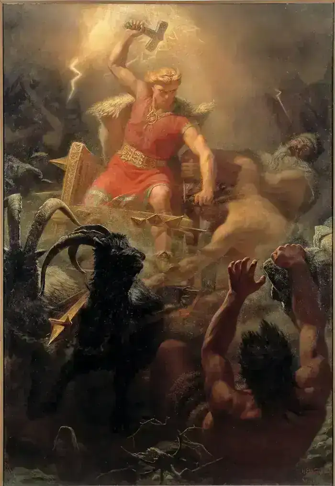

The textual tradition
Giants are not a fringe import. They are in the canon.
Maps, diagrams and images


- Genesis 6:1–4 — “The Nephilim were on the earth in those days,” after the “sons of God” took human wives. The word nephilim is of uncertain meaning; the most common proposal links it to nāpal, “to fall”. The same passage calls them gibborim, “mighty men”.
- Numbers 13:28–33 — the spies report the Anakim in Canaan and say “we seemed like grasshoppers”.
- Deuteronomy 2–3 — the Rephaim, Emim and Zamzummim; Og of Bashan, whose iron bed is described as nine cubits long.
- 1 Samuel 17 — Goliath of Gath, six cubits and a span in the Masoretic text.
- Greek myth — the Titans, the Gigantes who war on Olympus, and Typhoeus.
- Norse myth — the jotnar, whose size is often more about scale than stature.
Note how few of these words actually mean “giant”. Biblical scholarship is fairly clear that several are ethnic or status terms — Rephaim, Anakim, gibborim — which the King James translators rendered as “giants”. That translation choice is where a lot of the modern certainty comes from.
Josephus and the bones
The first-century historian Flavius Josephus is the most-quoted ancient witness, and he is worth reading exactly:
“There remained still a race of giants, who, by reason of their huge frames and figures in no way like the rest of mankind, were an amazing spectacle and a tale of terror to the ear. Their bones are shown to this day, bearing no resemblance to any that have come within men’s ken.” Josephus, Antiquities 5.125
Josephus says he has seen giant bones displayed at Hebron. The Torah.com’s study of “premodern encounters with giant bones” argues the obvious: the ancient world was full of enormous fossil bones — mammoth, mastodon, elephant, giraffe, whale — and had no concept of extinct species. A fossil femur from a proboscidean is a giant’s thigh.
This is the single most useful explanation in the dossier, because it scales. It accounts for giant bones in Greece, in China (where “dragon bones” were ground into medicine), in Native American traditions, and in the biblical accounts, without requiring a conspiracy or a lost race.
The Cardiff Giant, 1869
The modern giant-skeleton genre begins with a business dispute. In 1866, Binghamton cigar-maker George Hull argued with a Methodist revivalist about whether the Bible’s giants were literal. Hull decided to find out what people would believe.
He bought an eleven-foot block of gypsum in Fort Dodge, Iowa, shipped it to Chicago, had it carved into a ten-foot-five man, aged it, shipped it to his cousin William “Stub” Newell’s farm in Cardiff, New York, and buried it. In October 1869, hired well-diggers hit stone three feet down.
Newell charged 25 cents a head, then 50. Hull sold the figure for $23,000. P.T. Barnum offered $50,000, was refused, and had an exact copy made — which he exhibited as the real one, prompting the line attributed to showman David Hannum that a sucker is born every minute. Cornell’s first president, Andrew Dickson White, visited and immediately saw it was a statue. Hull eventually confessed.
The photographs
Modern “giant skeleton” images are almost all digitally composited. A 2016 paper in a George Fox University collection describes the genre precisely: “badly photoshopped YouTube videos, often set to ominous, mystical music, featuring 50-foot skeletons next to hapless shovel-wielding desert workers and heavy machinery.”
The giveaway is always the same — inconsistent lighting and shadows, a skeleton with no excavation matrix, no museum accession, no publication, and a site that cannot be revisited.
The Levant is one of the most intensively excavated regions on Earth. No outsized human skeletons have been recovered there. The National Center for Science Education puts it bluntly: “There is no more reason to think the natives were gigantic than there is to claim that the San Francisco Giants baseball team consists of gargantuans.”
What does exist: individual humans at the extreme end of normal variation. Robert Wadlow reached 2.72 m (8 ft 11 in) and is the tallest verified person in recorded history; acromegaly and gigantism are documented endocrine conditions. A 2.7 m man is remarkable, not a species.
What also exists: real Megafauna. Gigantopithecus was a genuinely enormous ape — up to 3 m and 300 kg — that went extinct perhaps 300,000 years ago, and is one of the few fossils ever offered as a serious basis for giant-human legends. It was an orangutan relative, not a person.
Why the legend keeps its grip
Because it is doing several jobs at once. It explains large ancient architecture without granting the builders credit. It supplies a lost golden age. It gives “fallen angels” a physical archaeology. And it is uniquely easy to fake — a photograph of a big skeleton requires no theory, which is why the fakes spread faster than any rebuttal.
The same three functions appear in Dragons & Dinosaurs and in the “advanced civilization” strand of the world beyond the ice.
Sources for this page
- Massachusetts Historical Society, “‘A Remarkable Deception’: The Cardiff Giant Hoax”masshist.org
- Archaeology magazine, “When Giants Roamed the Earth”archive.archaeology.org
- TheTorah.com, “‘There We Saw the Giants’ — Premodern Encounters with Giant Bones”thetorah.com
- NCSE, “It Ain’t Necessarily So: Giants and Biblical Literalism”ncse.ngo
- George Fox University, “The Embarrassing and Alluring Biblical Giant” (PDF)digitalcommons.georgefox.edu
- Journal of Religion and Popular Culture, “Shocking Discoveries of Giants You Will Not Believe!!!”online.ucpress.edu
- Answers in Genesis, “Giants in the Bible” — the literalist reading, in its own wordsanswersingenesis.org
Open resources on this topic
- BookGiants of world Literature Cervantes — Arnoldo Mandadori · 1970 (Internet Archive, free to read)
- BookGiants and Fairies — Grace E. Potter Constance Gilbert · 1964 (Internet Archive, free to read)
- BookGiants in their tall black hats : essays on the Iron Brigade — 1998 (Internet Archive, free to read)
- PapersOpen-access articles: DOAJ · PubMed Central · Internet Archive Scholar
- BooksPublic-domain and borrowable copies: Open Library · Project Gutenberg · Google Books
Cite this page
Momin, S. (2026). Giants. The Larger World Archive. https://drsamonline.github.io/LARGE_GLOBE/giants.htmlMomin, Sohil. “Giants.” The Larger World Archive, 2026, https://drsamonline.github.io/LARGE_GLOBE/giants.html.Momin, Sohil. “Giants.” The Larger World Archive, 2026. https://drsamonline.github.io/LARGE_GLOBE/giants.html.@misc{giants2026giants,
author = {Momin, Sohil},
title = {Giants},
year = {2026},
howpublished = {The Larger World Archive},
url = {https://drsamonline.github.io/LARGE_GLOBE/giants.html},
note = {Last reviewed 20 November 2026}
}Last reviewed 20 November 2026 · Corrections policy · this page is not peer reviewed